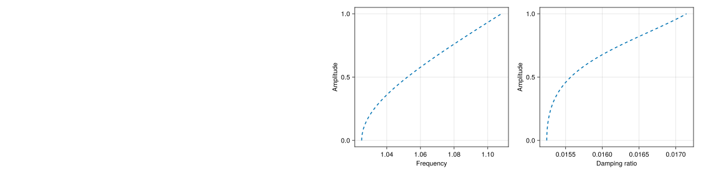
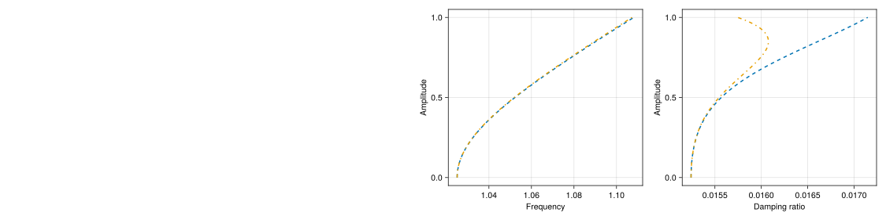
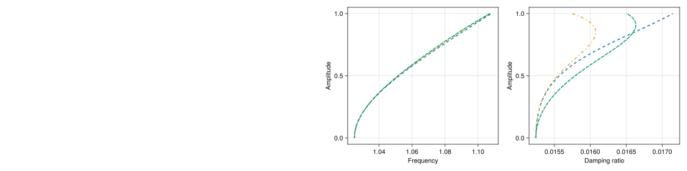
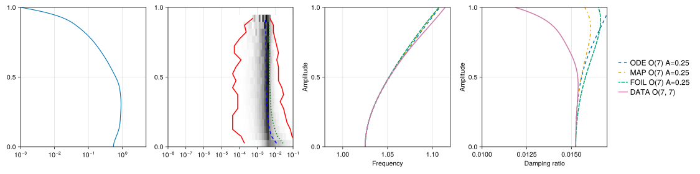

Invariant Models
This package is an improved version of FMA. Current capabilities are
- Identifies invariant foliations in autonomous, periodic and quasi-periodic systems from data.
- Calculates invariant manifolds in autonomous, periodic and quasi-periodic systems from discrete-time systems and vector fields.
- Calculates invariant foliations in autonomous, periodic and quasi-periodic systems from discrete-time systems and vector fields.
- Calculates instantaneous frequencies and damping ratios on two-dimensional invariant manifolds.
Background
The system in question is assumed to obey the discrete-time map
\[\begin{aligned} \boldsymbol{x}_{k+1} &=\boldsymbol{F}\left(\boldsymbol{x}_{k},\boldsymbol{\theta}_{k}\right)\\\boldsymbol{\theta}_{k+1} &= \boldsymbol{\theta}_{k}+\boldsymbol{\omega} \Delta t, \end{aligned} \tag{MAP}\]
where it is assumed that $\Delta t$ is the sampling period, that is the duration of time between two samples $\boldsymbol{x}_k$ and $\boldsymbol{x}_{k+1}$. or the vector field
\[\begin{aligned} \dot{\boldsymbol{x}} &=\boldsymbol{F}\left(\boldsymbol{x},\boldsymbol{\theta}\right)\\\dot{\boldsymbol{\theta}} &= \boldsymbol{\omega}, \end{aligned} \tag{ODE}\]
It may be the case that variable $\boldsymbol{\theta}$ is absent and therefore the system is autonomous.
Invariance
There are four ways to connect a low-order model $\boldsymbol{R}$ to $\boldsymbol{F}$. The figure below shows the four combinations. Only invariant foliations and invariant manifolds produce meaningful reduced order models. Only invariant foliations and autoencoders can be fitted to data. The intersection is invariant foliations.

Therefore,
- when a system of equations is given, invariant manifolds are the most appropriate (foliations are still possible),
- when data is given, only invariant foliations are appropriate.
Autoencoders such as SSMLearn do not enforce invariance and therefore generate spurious results as shown in Data-Driven Reduced Order Models Using Invariant Foliations, Manifolds and Autoencoders.
Invariant Foliations
The invariance equation for foliations is
\[\boldsymbol{R}\left(\boldsymbol{U}\left(\boldsymbol{x},\boldsymbol{\theta}\right),\boldsymbol{\theta}\right) = \boldsymbol{U}\left(\boldsymbol{F}\left(\boldsymbol{x},\boldsymbol{\theta}\right),\boldsymbol{\theta}+\boldsymbol{\omega}\right) \tag{FOIL}\]
Invariant Manifolds
The invariance equation for manifolds is
\[\boldsymbol{S}\left(\boldsymbol{V}\left(\boldsymbol{x},\boldsymbol{\theta}\right),\boldsymbol{\theta}\right) = \boldsymbol{V}\left(\boldsymbol{F}\left(\boldsymbol{x},\boldsymbol{\theta}\right),\boldsymbol{\theta}+\boldsymbol{\omega}\right) \tag{MAN}\]
Case Study of a Minimal Forced System
We consider a forced version of the Shaw-Pierre example, that originally appeared in [].
\[\begin{aligned} \dot{x}_1 &= x_3 \\ \dot{x}_2 &= x_4 \\ \dot{x}_3 &= - c x_3 - k x_1 - \kappa y_1^3 + k (x_2 - x_1) + c (x_4 - x_3) + p \cos(\theta+0.1) \\ \dot{x}_4 &= - c x_4 - k x_2 - k (x_2 - x_1) - c (x_4 - x_3) + p \cos(\theta) \\ \dot{\theta} &= \omega \\ \end{aligned}\]
The parameters are $k=1$, $\kappa = 0.2$, $c = 2^{-5}$. The forcing frequency is $\omega = 1.2$ and the the forcing amplitude is $p=0.25$.
Without forcing the natural frequencies are approximately $\omega_1 = 1$, $\omega_2 = \sqrt{3}$. The damping ratios are $\zeta_1 = 0.01561$ and $\zeta_2 = 0.02705$. The spectral quotient for the first mode is $\beth_1 = 3$ and for the second mode is $\beth_2 = 1$. When forcing is turned on these values change slightly due to nonlinearity.
Set-up
First we import the required packages
using InvariantModels
using GLMakieConsider the Shaw-Pierre vector field
NDIM = 4
function shawpierre!(x, y, p, t)
k = 1.0
kappa = 0.2
c = 2^-5
x[1] = y[3]
x[2] = y[4]
x[3] = - c*y[3] - k*y[1] - kappa*y[1]^3 + k*(y[2]-y[1]) + c*(y[4]-y[3]) + p * cos(t+0.1)
x[4] = - c*y[4] - k*y[2] - k*(y[2]-y[1]) - c*(y[4]-y[3]) + p * cos(t)
return x
end
function shawpierre(z, p, t)
dz = zero(z)
return shawpierre!(dz, z, p, t)
endSet up some system parameters
Amplitude = 0.25 # forcing amplitude
omega_ode = 1.2 # forcing frequency
# parameters of the numerical method
fourier_order = 3 # fourier harmonics to be resolved
ODE_order = 7 # polynomial order of the calculations
SEL = [1 2] # which invariant vector bundle to use
dispMaxAmp = 1.0 # maximum amplitude to displayInvariant Manifolds of Vector Fields
Create a polynomial MPode, XPode out of our vector field
MPode = QPPolynomial(NDIM, NDIM, fourier_order, 0, ODE_order)
XPode = fromFunction(MPode, (x, t) -> shawpierre(x, Amplitude, t))The invariant manifold can now be calculated using QPODETorusManifold:
MK, XK, MSn, XSn, MWn, XWn, _, _, XWre, oeva = QPODETorusManifold(MPode, XPode, omega_ode, SEL, threshold=0.1, resonance=false)The frequencies and damping ratios are extracted from the reduced order model using ODEFrequencyDamping
That_ode, Rhat_ode, rho_ode, gamma_ode = ODEFrequencyDamping(MWn, XWn, MSn, XSn, dispMaxAmp)
odeAmp = range(0, dispMaxAmp, length=1000)
odeFreq = abs.(That_ode.(odeAmp))
odeDamp = -Rhat_ode.(odeAmp) ./ odeFreqThe results are then plotted
fig = Figure(size=(1200, 400))
axFreq = Axis(fig[1, 1])
axDamp = Axis(fig[1, 2])
axFreq.xlabel = "Frequency"
axFreq.ylabel = "Amplitude"
axDamp.xlabel = "Damping ratio"
axDamp.ylabel = "Amplitude"
lines!(axFreq, odeFreq, odeAmp, label="ODE O($(ODE_order)) A=$(Amplitude)", linestyle=:dash, linewidth=2)
lines!(axDamp, odeDamp, odeAmp, label="ODE O($(ODE_order)) A=$(Amplitude)", linestyle=:dash, linewidth=2)
display(fig)
Invariant Manifolds of Maps
First we set up some additional parameters, such as the sampling period $\Delta t$ = Tstep
Tstep = 0.8 # sampling period
omega = omega_ode * Tstep # shift angleWe now create a discrete-time map from the vector field by Taylor expanding an ODE solver about the origin using mapFromODE. We take 500 time steps on the interval $[\theta,\theta + \Delta t]$. The resulting map MP, XPmap is dependent on the phase variable $\theta \in [0,2\pi)$
MP = QPPolynomial(NDIM, NDIM, fourier_order, 0, ODE_order)
XPmap = zero(MP)
mapFromODE(MP, XPmap, shawpierre!, Amplitude, omega_ode, Tstep / 500, Tstep)The invariant manifold of the map is calculated using QPMAPTorusManifold
MK, XK, MSn, XSn, MWn, XWn, MSd, XSd = QPMAPTorusManifold(MP, XPmap, omega, SEL, threshold = 0.1, resonance = false)The frequencies and damping ratios are extracted from the reduced order model using MAPFrequencyDamping
That, Rhat_r, rho, gamma = MAPFrequencyDamping(MWn, XWn, MSn, XSn, dispMaxAmp)
mapAmp = range(0, dispMaxAmp, length=1000)
mapFreq = abs.(That.(mapAmp)) ./ Tstep
mapDamp = -log.(abs.(Rhat_r.(mapAmp))) ./ abs.(That.(mapAmp))The results are plotted
lines!(axFreq, mapFreq, mapAmp, label="MAP O($(ODE_order)) A=$(Amplitude)", linestyle=:dashdot, linewidth=2)
lines!(axDamp, mapDamp, mapAmp, label="MAP O($(ODE_order)) A=$(Amplitude)", linestyle=:dashdot, linewidth=2)
display(fig)
Invariant Foliations of Maps
Using QPGraphStyleFoliations, two invariant foliations are calculated and the invariant manifold defined by the zero level-set of the second foliation is extracted.
MRf, XRf, MW, XW, MRt, XRt, MUt, XUt, MSt, XSt, MVt, XVt = QPGraphStyleFoliations(MP, XPmap, omega, SEL; dataScale=1, resonance=false, threshold=0.1)The results are plotted
MWf, XWf = toFourier(MW, XW)
That, Rhat_r, rho, gamma = MAPFrequencyDamping(MWf, XWf, MRf, XRf, dispMaxAmp)
foilAmp = range(0, dispMaxAmp, length=1000)
foilFreq = abs.(That.(foilAmp)) ./ Tstep
foilDamp = -log.(abs.(Rhat_r.(foilAmp))) ./ abs.(That.(foilAmp))
lines!(axFreq, foilFreq, foilAmp, label="FOIL O($(ODE_order)) A=$(Amplitude)", linestyle=:dashdot, linewidth=2)
lines!(axDamp, foilDamp, foilAmp, label="FOIL O($(ODE_order)) A=$(Amplitude)", linestyle=:dashdot, linewidth=2)
display(fig)
ROM identification from data
Set-up
Importing a library to load/store data and specifying parameters
using BSON: @load, @save
# parameters for the data-driven part
maxSimAmp = 1.0 # maximum initial condition measured from the torus
maxAmp = 1.0 # filter out data with amplitude greater than maxAmp
dataRatio = 1.0 # the proportion of data to be retained when filtering (all of it)
R_order = 7 # polynomial order of R
U_order = 7 # polynomial order of U
V_order = 7 # polynomial order of V
S_order = 7 # polynomial order of S
STEPS = 800 # number of optimisation steps to use
# the names of data files
revision = "shawpierre-2p$(log2(scale_epsilon))-SIMAMP$(maxSimAmp)-AMP$(Amplitude)-F$(fourier_order)-R$(R_order)-U$(U_order)-V$(V_order)-S$(S_order)-MODE$(SEL[1])"
datarevision = "shawpierre-SIMAMP$(maxSimAmp)-AMP$(Amplitude)-F$(fourier_order)"Creating data
We create 600 trajectories 60 points long each using generate and save the data for future use.
dataX, dataY, thetaX, thetaY, thetaNIX, thetaNIY = generate(NDIM, shawpierre!, ones(NDIM) * maxSimAmp, 600, 50, fourier_order, omega_ode, Tstep, Amplitude, XWre)
@save "data-$(datarevision).bson" dataX dataY thetaX thetaY TstepFinding an Approximate Linear Model
An approximate linear model is found about the invariant torus using findLinearModel.
A, b, MK1, XK1 = findLinearModel(dataX, thetaX, dataY, thetaY, omega)Identifying Invariant Vector Bundles and Transforming Data
We calculate invariant vector bundles from the linear model and project the data into this coordinate system using QPPreProcess
thetaTX, dataTX, thetaTY, dataTY, dataScale, preId, R1, S1, W1 = QPPreProcess(XK1, A, omega, thetaX, dataX, thetaY, dataY, SEL; Tstep=Tstep, maxAmp=maxAmp, data_ratio=dataRatio)Here, the inverse transformation W1 was also created.
Setting up the Function Approximators
We create the data structure holding our two invariant foliations using QPCombinedFoliation and set up the data cache that speeds up calculations using makeCache. Our optimisation algorithm requires setting up so-called trust-region radii. For housekeeping purposes we also specify using dataIdV that all data points are used for identifiction.
MCF, XCF = QPCombinedFoliation(NDIM, 2, fourier_order, R_order, U_order, S_order, V_order, R1, S1, MK1, zero(XK1), sparse=false)
# creating a cache
XCFcache = makeCache(MCF, XCF, thetaTX, dataTX, thetaTY, dataTY)
dataIdV = Array{Any,1}(undef, 1)
dataIdV[1] = 1:size(thetaTX, 2)
radii = to_zero(XCF)Performing the Optimisation
Using function QPOptimise, the optimal parameter values of our foliation are found:
QPOptimise(MCF, XCF, thetaTX, dataTX, thetaTY, dataTY;
maxit=8, gradient_ratio=2^(-7), gradient_stop=2^(-29), steps=STEPS, name=revision,
cache=XCFcache,
omega=omega, Tstep=Tstep, dataId=dataIdV[1], radii=radii)Analysis of the result
The post processing step using QPPostProcess extract a reduced order model together with an invariant manifold. The manifold immersion $\boldsymbol{W}$ is MW, XW.
MSn, XSn, MFW, XFWoWdoWn, MW, XW = QPPostProcess(MCF, XCF, W1, omega)The instantaneous frequencies and damping ratios are also plotted
That, Rhat_r, rho, gamma = MAPFrequencyDamping(MFW, XFWoWdoWn, MSn, XSn, dispMaxAmp / dataScale)
r_data = range(0, dispMaxAmp / dataScale, length=1000)
dataFreq = abs.(That.(r_data)) / Tstep
dataDamp = -log.(abs.(Rhat_r.(r_data))) ./ abs.(That.(r_data))
dataAmp = r_data .* dataScale
# plotting
lines!(axFreq, dataFreq, dataAmp, label="DATA O($(R_order), $(S_order))", linestyle=:solid, linewidth=2)
lines!(axDamp, dataDamp, dataAmp, label="DATA O($(R_order), $(S_order))", linestyle=:solid, linewidth=2)Error Analysis
To make sense of the results, we analyse the fitting error, which is the residual of the invariance equation divided by the distance from the invariant torus
\[ E = \frac{\left| \boldsymbol{R}\left(\boldsymbol{U}\left(\boldsymbol{x}_k,\theta_k\right),\theta_k\right) - \boldsymbol{U}\left(\boldsymbol{y}_k,\theta_k +\omega\right) \right|}{\left| \boldsymbol{x}_k - K(\theta_k) \right|}\]
The amplitude of a given point is calculated by
\[ A = \left| \boldsymbol{W}(\boldsymbol{U}(\boldsymbol{x}_k, \theta_k)) \right|\]
The following call calculates $A$ as OnManifoldAmplitude and various statistics about E as a function of the amplitude.
OnManifoldAmplitude, hsU, errMaxX, errMaxY, errMinX, errMinY, errMeanX, errMeanY, errStdX = ErrorStatistics(MCF, XCF, MW, XW, thetaTX, dataTX, thetaTY, dataTY; dataScale=dataScale, cache=XCFcache)
den = Makie.KernelDensity.kde(sort(vcat(OnManifoldAmplitude, -OnManifoldAmplitude)))
atol = eps(maximum(den.density))
den.density[findall(isapprox.(den.density, 0, atol=atol))] .= atol
dataDensityX = den.density
dataDensityY = den.xThe error and data distribution is the plotted
axErr = Axis(fig[1, 2], xscale=log10)
axDense = Axis(fig[1, 1], xscale=log10)
xlims!(axErr, 1e-6, 1e-1)
ylims!(axErr, 0, maxAmp)
xlims!(axDense, 1e-2, 100)
ylims!(axDense, 0, maxAmp)
lines!(axDense, dataDensityX, dataDensityY)
heatmap!(axErr, hsU, colormap=GLMakie.Reverse(:greys))
lines!(axErr, errMaxX, errMaxY, linestyle=:solid, linewidth=2, color=:red)
lines!(axErr, errMinX, errMinY, linestyle=:solid, linewidth=2, color=:red)
lines!(axErr, errMeanX, errMeanY, linestyle=:dash, linewidth=2, color=:blue)
lines!(axErr, errMeanX .+ errStdX, errMeanY, linestyle=:dot, linewidth=2, color=:green)Finally plot legends are displayed
# creating the legend
fig[1, 5] = Legend(fig, axFreq, merge=true, unique=true, labelsize=16, backgroundcolor=(:white, 0), framevisible=false, rowgap=1)
resize_to_layout!(fig)
display(fig)
Functional Representation
All data structures follow the conventions of ManifoldsBase.jl. For example, the representation of the submersion $\boldsymbol{U}$ is given as two components MU and XU, where MU describes the function and XU contains the parameters of $\boldsymbol{U}$.
Interpolation in Fourier Space
When representing periodic functions, we use Fourier collocation. The grid of the collocation is given by
\[\vartheta_{1}=0,\ldots,\vartheta_{2\ell+1}=\frac{2\ell}{2\ell+1}2\pi,\]
where $\ell$ is the highest resolved Fourier harmonic. The grid has $2\ell+1$ nodes, which is the same as the number of Fourier coefficients that can uniquely represent a periodic function on the grid.
Given a set of points on the grid $\boldsymbol{x}_{j}=\boldsymbol{x}\left(\vartheta_{j}\right)$, we can use an interpolation to reconstruct the periodic function on the interval $[0,2\pi)$ using
\[\boldsymbol{x}\left(\theta\right)=\sum_{j=1}^{2\ell+1}\gamma\left(\theta-\vartheta_{j}\right)\boldsymbol{x}_{j},\]
where
\[\gamma\left(\theta\right)=\frac{1}{2\ell+1}\frac{\sin\frac{2\ell+1}{2}\theta}{\sin\frac{1}{2}\theta}.\]
Let us define the matrix $\boldsymbol{X} = (\boldsymbol{x}_{j}, \ldots, \boldsymbol{x}_{2\ell+1})$ and the interpolation vector for a given value of $\theta$ by
\[\boldsymbol{t}_\theta = (\gamma\left(\theta-\vartheta_{1}\right), \ldots, \gamma\left(\theta-\vartheta_{2\ell+1}\right))^T,\]
then the function evaluation $\boldsymbol{x}\left(\theta\right)$ is a matrix-vector product
\[\boldsymbol{x}\left(\theta\right)= \boldsymbol{X} \boldsymbol{t}_\theta.\]
Input to Data-driven Methods
We assume that the data is produced by an unknown map $\boldsymbol{F}$, such that
\[\boldsymbol{y}_{k} = \boldsymbol{F}\left(\boldsymbol{x}_{k},\theta_{k}\right).\]
When considering trajectories for some set of consecutive indices we have $\boldsymbol{x}_{k+1}=\boldsymbol{y}_{k}$. The data we analyse is organised into matrices
\[\begin{aligned} \boldsymbol{X} &= (\boldsymbol{x}_1,\ldots, \boldsymbol{x}_N) \\ \boldsymbol{Y} &= (\boldsymbol{y}_1,\ldots, \boldsymbol{x}_N) \\ \boldsymbol{\Theta}_x &= (\boldsymbol{t}_{\theta_1},\ldots, \boldsymbol{t}_{\theta_N}) \\ \boldsymbol{\Theta}_y &= (\boldsymbol{t}_{\theta_1+\omega},\ldots, \boldsymbol{t}_{\theta_N + \omega}) \end{aligned}\]
API Reference
Finding a Linear Model from Data
InvariantModels.findLinearModel — FunctionfindLinearModel(dataX, thetaX, dataY, thetaY, omega; ratio=0.5, steps=3)The input arguments arguments
dataXis matrix $\boldsymbol{X}$. Each column corresponts to a data point.dataYis matrix $\boldsymbol{Y}$.thetaXis matrix $\boldsymbol{\Theta}_x$thetaYis matrix $\boldsymbol{\Theta}_y$ratiothe ratio of data to be kept at the final stepstepsthe number of steps to take to find
Finds a linear model in the form of
\[\begin{aligned} \boldsymbol{x}_{k+1} &= \boldsymbol{A}(\theta_k) \boldsymbol{x}_k + \boldsymbol{b}(\theta_k) \\ \theta_{k+1} &= \theta_k + \omega \end{aligned}\]
and calculates the invariant torus represented by $\boldsymbol{K}$ from the equation
\[\boldsymbol{K}(\theta+\omega) = \boldsymbol{A}(\theta) \boldsymbol{K}(\theta) + \boldsymbol{b}(\theta)\]
The output is
A, b, MK, XKAis a 3-index array representing $\boldsymbol{A}(\theta)$bis a 2-index array representing $\boldsymbol{b}(\theta)$MK,XKrepresent to torus parametrisation $K$
Data Structures and Related Functions
InvariantModels.getgrid — Functiongetgrid(n::Integer)Returns a uniform grid on the interval $[0, 2 \pi)$ with $2n + 1$ number of points. The end point $2\pi$ is not part of the grid.
The number $n$ corresponds to the number of Fourier harmonics that can be represented on the grid.
InvariantModels.QPConstant — TypeM = QPConstant(dim_out, fourier_order, field::AbstractNumbers=ℝ)Creates a vector valued periodic function with fourier_order Fourier harmonics. The parameters are
dim_outnumber of dimensions,fourier_ordernumber of Fourier harmonics,fieldwhether it is real valuedfield=ℝor complex valuedfield=ℂ.
InvariantModels.QPPolynomial — TypeM = QPPolynomial(dim_out, dim_in, fourier_order, min_polyorder, max_polyorder, field::AbstractNumbers=ℝ; perp_idx=1:dim_in)Creates a vector valued polynomial that also a periodic function of another variable.
\[ \boldsymbol{y} = P(\boldsymbol{x}, \theta)\]
The parameters are
dim_outnumber of output dimensions, i.e., the dimensionality of $\boldsymbol{y}$dim_innumber independent variables, i.e., the dimensionality of $\boldsymbol{x}$fourier_ordernumber of Fourier harmonics for the independent variable $\theta$min_polyorderthe lowest monomial order contained in polynomial $P$max_polyorderthe highest monomial order contained in polynomial $P$fieldwhether it is real valuedfield=ℝor complex valuedfield=ℂperp_idxthe indices of idependent variables in $\boldsymbol{x}$ that must appear at least linearly in each monomial. For example if we have 4 variables andperp_idx = [1 2], the monomial $x_3 x_4$ is not part of the polynomial, because they do not contains any of $x_1$ or $x_2$. However, $x_1 x_3$ is part of the polynomial, because $1$ is among the indices given byperp_idx.
InvariantModels.fromFunction! — FunctionfromFunction!(M::QPPolynomial, W, fun)Taylor expands Julia function fun to a polynomial QPPolynomial, whose structure is prescribed by M. Function $f$ = fun must have two arguments
\[ f : \mathbb{R}^n \times [0,2\pi) \to \mathbb{R}^m,\]
where $n$ is dim_in and $m$ is the dim_out parameter of polynomial M. The result is copied into W.
InvariantModels.fromFunction — FunctionW = fromFunction(M::QPPolynomial, fun)Same as fromFunction!, except that the result is returned in W.
InvariantModels.Eval — Functionres = Eval(M::QPPolynomial, X, theta::Matrix, data::Matrix; cache=makeCache(M, X, theta, data))Same as Eval!, except that the result is returned in res.
InvariantModels.Eval! — FunctionEval!(res, M::QPPolynomial, X, theta::Matrix, data::Matrix; cache=makeCache(M, X, theta, data))Evaluate the polynomial M, X at multiple data points. The data points are given by theta and data. Each column of theta and data corresponds to a single data point. The result is copied into res.
The matrix theta contains the interpolation weights of Fourier collocation and not the actual values of $\theta$. Generally, these interpolation weights are pre-calculated, which avoids repeated calculation. The number of rows of $\theta$ is the same as $2 n + 1$, where $n$ is the number of Fourier modes resolved by polynomial M.
InvariantModels.mapFromODE — FunctionmapFromODE(M::QPPolynomial, W, fun, par, omega, dt, step)Creates a Poincare map from the vector field given by fun and places it into the polynomial M, X. The parameters are
M,Wthe polynomial to contain the result.funthe vector field in the form offun(dx, x, p, theta), wherexis the input state var,dxis the time-derivative $\frac{\mathrm{d}\boldsymbol{x}}{\mathrm{d}t}$,pis the parameter, which equals toparandthetais the phase of forcing on the interval $[0, 2\pi)$.paris the parameter (vector) offun.omegais the forcing frequency. The independent variabletoffunis calculated astheta= $\omega t$, where $t$ is the independent variable (time).dtis the time step of the integrator.stepis time period that the differential equation is solved for.
InvariantModels.toFourier — FunctionMF, XF = toFourier(M::QPPolynomial, X)Converts the polynomial M, X to another polynomial that contains Fourier coefficients as opposed to collocated values of the polynomial.
Semi-analytic Reduction to Invariant Manifolds
InvariantModels.QPMAPTorusManifold — FunctionQPMAPTorusManifold(MP::QPPolynomial, XP, omega, SEL;
threshold = 0.1,
resonance = false,
rom_order = max_polyorder)The inputs are the following
MP,XPthe Poincare map that describes the dynamics.omegathe phase shift at each time-stepSELwhich spectral bundles to use for the calculation of the invariant manifoldthresholdif a near resonance is greater than this value, it is ignoredresonance: whenfalsethe conjugate map is reduced to an autonomous system, even if there are near resonances. Otherwise all near resonances are accounted for in the conjugate map.rom_orderwhat is the highest order for which near resonances are taken into account. It defaults to the order of the Poincare mapMP,XP.
This function does three calculations
- Calculates the invariant torus using Newton's method. The startnig iteration is at the origin.
- Calculates the linear system about the invariant torues and decomposes it into invariant vector bundles. The bundles are ordered by the corresponding spectrum. The bundles with the greatest spectral radius appear first.
- Given the invariant bundles about the torus, calculate the invariant manifold tangent to the selected vector bundles. The selection is done by
SEL.
Return values are:
MK, XK, MSn, XSn, MWn, XWn, MSd, XSd, XWreMK,XKrepresent the invariant torusMSn,XSnthe normal form of the conjugate dynamics on the invariant manifoldMWn,XWnthe manifold immersion in the coordinate system of the invariant vector bundle, selected bySELMSd,XSdthe full systemMP,XPtransformed to the coordinate system of the vector bundle decompositionXWrethe transformation from the vector bundles to the original coordinate system
InvariantModels.QPODETorusManifold — FunctionQPODETorusManifold(MP::QPPolynomial, XP, omega, SEL;
threshold = 0.1,
resonance = false,
rom_order = max_polyorder)This is the equivalent version of QPMAPTorusManifold for vector fields.
The inputs are the following
MP,XPthe vector field that describes the dynamics.omegais the forcing frequencySELwhich spectral bundles to use for the calculation of the invariant manifoldthresholdif a near resonance is greater than this value, it is ignoredresonance: whenfalsethe conjugate map is reduced to an autonomous system, even if there are near resonances. Otherwise all near resonances are accounted for in the conjugate map.rom_orderwhat is the highest order for which near resonances are taken into account. It defaults to the order of the Poincare mapMP,XP.
This function does three calculations
- Calculates the invariant torus using Newton's method. The startnig iteration is at the origin.
- Calculates the linear system about the invariant torues and decomposes it into invariant vector bundles. The bundles are ordered by the corresponding spectrum. The bundles with the greatest spectral radius appear first.
- Given the invariant bundles about the torus, calculate the invariant manifold tangent to the selected vector bundles. The selection is done by
SEL.
Return values are:
MK, XK, MSn, XSn, MWn, XWn, MSd, XSd, XWre, LambdaMK,XKrepresent the invariant torusMSn,XSnthe normal form of the conjugate dynamics on the invariant manifoldMWn,XWnthe manifold immersion in the coordinate system of the invariant vector bundle, selected bySELMSd,XSdthe full systemMP,XPtransformed to the coordinate system of the vector bundle decompositionXWrethe transformation from the vector bundles to the original coordinate systemLambdais the linear part of the system about the invariant torus in the coordinate system of the vector bundles. This is for debug purposes only, it should be a diagonal matrix for each collocation point.
Manifolds via Invariant Foliations
InvariantModels.QPGraphStyleFoliations — FunctionQPGraphStyleFoliations(MP::QPPolynomial, XP, omega, SEL; dataScale=1, resonance=false, threshold=0.1, rom_order=max_polyorder)The purpose of this function is to calculate two complementary invariant foliations about an invariant torus and then extract the invariant manifold that is the zero level set of the second foliation. The invariant manifold has the same dynamics as the first foliation.
The inputs are the following
MP,XPthe Poincare map that describes the dynamics.omegathe phase shift at each time-stepSELwhich spectral bundles to use for the calculation of the invariant manifolddataScaleis the scaling factor that scales the coordinate system of the invariant manifold. This scaling is used when we would like to compare the invariant manifold identified from data that has been scaled. Using the same scaling factor makes this comparison possible.thresholdif a near resonance is greater than this value, it is ignoredresonance: whenfalsethe conjugate map is reduced to an autonomous system, even if there are near resonances. Otherwise all near resonances are accounted for in the conjugate map.rom_orderwhat is the highest order for which near resonances are taken into account. It defaults to the order of the Poincare mapMP,XP.
Return values are:
MRf, XRf, MW, XW, MRt, XRt, MUV, XUVflat, MSt, XSt, MVU, XVUflatMRf,XRfthe conjugate dynamics of the first invariant foliation (SEL) in normal form coordinates and with Fourier coefficientsMW,XWthe immersion of the invariant manifold in the original coordinate system
The outputs that could be used to set initial conditions to a foliation
MRt,XRtthe conjugate dynamics of the first invariant foliation (SEL) when the foliation is parametrised graph-styleMUV,XUVflatMSt,XStthe conjugate dynamics of the second invariant foliation when the foliation is parametrised graph-styleMVU,XVUflat
Frequencies and Damping Ratios
InvariantModels.MAPFrequencyDamping — FunctionMAPFrequencyDamping(MW::QPFourierPolynomial, XW, MR::QPFourierPolynomial, XR, amp_max; output = Diagonal(I,dim_out))Calculates corrected frequencies and damping ratios for a centre type equilibrium. The inputs are
MW,XWis the manifold immersion $\boldsymbol{W}: \mathbb{R}^2 \times [0,2\pi) \to \mathbb{R}^n$MR,XRis the conjugate dynamics $\boldsymbol{W}: \mathbb{R}^2 \times [0,2\pi) \to \mathbb{R}^2$amp_maxis the maximum amplitude to be consideredoutputis a matrix $\boldsymbol{M}$ that is used to calculate the instantaneous amplitude by pre multiplying the immersion: $\boldsymbol{M} \boldsymbol{W}$.
The inputs are such that they satisfy the invariance equation
\[\boldsymbol{W}\left(\boldsymbol{R}\left(\boldsymbol{z},\theta\right),\theta+\omega\right)=\boldsymbol{F}\left(\boldsymbol{W}\left(\boldsymbol{z},\theta\right),\theta\right),\]
where $\boldsymbol{F}$ is the map of the original dynamics. Given that the invariant manifold is in a normal form, we have the following structure to the conjugate map
\[\boldsymbol{R}\left(\boldsymbol{z}\right)=\begin{pmatrix}s\left(z,\overline{z}\right)\\ \overline{s}\left(z,\overline{z}\right) \end{pmatrix}\]
Using a the transformation $z=\rho\left(r\right)\exp\left(i\beta+i\alpha\circ\rho\left(r\right)\right)$ we can write the manifold immersion as
\[\widehat{\boldsymbol{W}}\left(r,\beta,\theta\right)=\boldsymbol{W}\left(\rho\left(r\right)\exp\left(i\beta+i\alpha\circ\rho\left(r\right)\right),\rho\left(r\right)\exp\left(-i\beta-i\alpha\circ\rho\left(r\right)\right),\theta\right)\]
so that the invariance equation holds
\[\widehat{\boldsymbol{W}}\left(R\left(r\right),\beta+T\left(r\right),\theta+\omega\right)=\boldsymbol{F}\left(\widehat{\boldsymbol{W}}\left(r,\beta,\theta\right),\theta\right),\]
where $R$ and $T$ are calculated using the same transformation.
The unknown functions $\rho$ and $\alpha$ are calculated such that
- the amplitude of a tori as a function of $r$ is the same as $r$ and
- there is zero phase shift between any two tori with different amplitudes with respect to parameter $\beta$.
Return values are
T, R_r, rho, alphaTis the function $T : [0,\infty) \to \mathbb{R}$R_ris the function $r \mapsto R(r) / r$rhois the same as $\rho$alphais the same as $\alpha$
The instantaneous frequency is calculated as
\[\omega(r) = \frac{T(r)}{\Delta t},\]
the instantaneous damping is calculated as
\[\zeta(r) = -\frac{\log r^{-1} R(r)}{T(r)},\]
where $\Delta t$ is the sampling period.
InvariantModels.ODEFrequencyDamping — FunctionODEFrequencyDamping(MW::QPFourierPolynomial, XW, MR::QPFourierPolynomial, XR, amp_max; output = Diagonal(I,dim_out))The inputs and outputs are the same as MAPFrequencyDamping, except that the interpretation of the input/output is slightly different. The input satisfies the invariance equation
\[D_1\boldsymbol{W}\left(\boldsymbol{z},\theta\right) \boldsymbol{R}\left(\boldsymbol{z},\theta\right) + D_1\boldsymbol{W}\left(\boldsymbol{z},\theta\right) \omega = \boldsymbol{F}\left(\boldsymbol{W}\left(\boldsymbol{z},\theta\right),\theta\right),\]
where $\boldsymbol{F}$ is a vector field.
From the output, the instantaneous frequency is
\[\omega(r) = T(r),\]
the instantaneous damping is calculated as
\[\zeta(r) = -\frac{r^{-1} R(r)}{T(r)}.\]
Generating Data
InvariantModels.generate — Functiongenerate(NDIM, rhs!, maxIC, nruns, npoints, fourier_order, omega, Tstep, A, XWre)Creates a data set from a differential equation, represented by rhs!. An invariant torus is found by observing a convergent simulation to the torus. The initial conditions are sampled from an ellipsoid about the torus. The directions of the ellipsoid are given by the linear transformation XWre. For each column of XWre the maximum amplitude is specified by the corresponding element of the vector maxIC.
The input parameters are
NDIMthe dimensionality of the systemrhs!the vector field in the form offun(dx, x, p, theta), wherexis the input state var,dxis the time-derivative $\frac{\mathrm{d}\boldsymbol{x}}{\mathrm{d}t}$,pis the parameter, which equals toparandthetais the phase of forcing on the interval $[0, 2\pi)$.maxICis a vector of sizeNDIM, containing the maximum simulation amplitudes in each direction ofXWrenrunsthe number of simulation runsnpointsthe length of the trajectory for each simulation runfourier_orderthe number of Fourier harmonics to consider when calculating $\boldsymbol{\Theta}_x$, $\boldsymbol{\Theta}_y$omegathe forcing frequency, as in $\dot{\theta} = \omega$Tstepthe time step between two samples of the trajectory, denoted by $\Delta t$Athe parameterpof the vector fieldXWreis the transformation that defines the axes of the ellipsoid about the invariant torus
The function returns
dataX, dataY, thetaX, thetaY, thetaNIX, thetaNIYdataXis matrix $\boldsymbol{X}$. Each column corresponts to a data point.dataYis matrix $\boldsymbol{Y}$.thetaXis matrix $\boldsymbol{\Theta}_x$thetaYis matrix $\boldsymbol{\Theta}_y$thetaNIXis the vector $(\theta_1, \ldots, \theta_N)$thetaNIYis the vector $(\theta_1 + \omega \Delta t, \ldots, \theta_N + \omega \Delta t)$
space
InvariantModels.generateMap — FunctiongenerateMap(MF, XF, MK, XK, maxIC, nruns, npoints, fourier_order, omega, Tstep)Similar to generate, except that it simulates a discrete-time system.
The inputs differ from generate. Instead of the vector field, the following must be specified
MF,XFthe discrete-time map of the systemMK,XKthe invariant torus arbout which the system is simulated.
There is no way the specify an ellipsoid for initial conditions, they are taken from a sphere of radius maxIC.
Identfying Invariant Foliations from Data
InvariantModels.QPPreProcess — FunctionQPPreProcess(K, A, omega, thetaX, dataX, thetaY, dataY, sel; Tstep=1.0, maxAmp=Inf, data_ratio=1.0, preId=[])This function is called after a linear model has been identified using findLinearModel. The following calculations are carried out
- decompose the linear dynamics into invariant vector bundles.
- project the data onto two invariant vector bundles, one that corresponds to the spectral circles selected by
seland the the remaining bundle. In this coordinate system the approximate linear model represented byAbecomes block-diagonal.
The input arguments arguments
Kapproximate invariant torusAapproximate linear map about the torusdataXis matrix $\boldsymbol{X}$. Each column corresponts to a data point.dataYis matrix $\boldsymbol{Y}$.thetaXis matrix $\boldsymbol{\Theta}_x$ These are the interpolations vectors for Fourier collocation corresponding to $\theta_k$.thetaYis matrix $\boldsymbol{\Theta}_y$selindicates the selected vector bundles.Tstepis the sampling period $\Delta t$maxAmpis the maximum amplitude of the data along the selected vector bundledata_ratio$\in [0,1]$ the proportion of the data to be kept and the rest is removed so that it is uniformly distributed along in the neighbourhood of the selected vector bundles.preIdif non-empty, this replaces the data filtering process.
The output is
thetaTX, dataTX, thetaTY, dataTY, dataScale, id, R1, S1, W1thetaTX, dataTX, thetaTY, dataTYare the filtered and scaled data. The approximate invariant torus is subtracted and the data is transformed into the coordiante system of the approximate vector bundles calculated fromA.dataScaleis the scaling factor that relates the input and outputdataX[:,id] = dataScale * dataTX.idthe indices of the input that are brought to the outputR1is the invariant part of the the linear systemAthat is invariant under the selectedselvector bundlesS1is the invariant part of the the linear systemAthat is invariant under the not selected (setdiff(1:data_dim, sel)) vector bundlesW1the inverse transformation that brings that data back into the physical coordinate system.
InvariantModels.QPCombinedFoliation — TypeQPCombinedFoliation(dim_data, dim_latent, fourier_order, R_order, U_order, S_order, V_order, R1, S1, MK, XK; sparse=false)Creates the data structures to store a pair of foliations that might be interconnected through scaling. The invariance equations represented by a Combined Foliation are
\[\begin{aligned} \boldsymbol{R}\left(\boldsymbol{U}\left(\boldsymbol{x},\boldsymbol{\theta}\right),\boldsymbol{\theta}\right) &= \boldsymbol{U}\left(\boldsymbol{F}\left(\boldsymbol{x},\boldsymbol{\theta}\right),\boldsymbol{\theta}+\boldsymbol{\omega}\right)\\ \boldsymbol{S}\left(\boldsymbol{V}\left(\boldsymbol{x},\boldsymbol{\theta}\right),\boldsymbol{\theta}\right) &= \boldsymbol{V}\left(\boldsymbol{F}\left(\boldsymbol{x},\boldsymbol{\theta}\right),\boldsymbol{\theta}+\boldsymbol{\omega}\right) \end{aligned}\]
The input parameters are
dim_datasystem dimensiondim_latentthe dimension of the reduced order modelfourier_ordernumber of Fourier harmonics used in discretisationR_orderthe polynomial order of function $\boldsymbol{R}$U_orderthe polynomial order of function $\boldsymbol{U}$S_orderthe polynomial order of function $\boldsymbol{S}$V_orderthe polynomial order of function $\boldsymbol{V}$R1the initial linear part of function $\boldsymbol{R}$S1the initial linear part of function $\boldsymbol{S}$MK,XKthe invariant torussparseuse compressed polynomials (default =false)
The output is the data structure
MCF, XCFInvariantModels.makeCache — FunctionmakeCache(M::QPCombinedFoliation, X, thetaX, dataTX, thetaY, dataTY)Creates a cache object for a combined foliation. The cache stores intermediate results that are not re-calculated between various steps of the optimisation. This improves performance significantly.
Input:
M,Xthe combined foliation generated byQPCombinedFoliationdataTXis matrix $\boldsymbol{X}$. Each column corresponds to a data point.dataTYis matrix $\boldsymbol{Y}$.thetaXis matrix $\boldsymbol{\Theta}_x$ These are the interpolations vectors for Fourier collocation corresponding to $\theta_k$.thetaYis matrix $\boldsymbol{\Theta}_y$
The output is a cache object cache.
InvariantModels.updateCache! — FunctionupdateCache!(cache::FCache, M, X, thetaX, dataTX, thetaY, dataTY)The same argument as makeCache, expect that it updates cache.
updateCache!(cache::FCache, M, X, thetaX, dataTX, thetaY, dataTY, sel)The same input argument as makeCache, expect that it updates cache only for the component of the foliation given by sel.
InvariantModels.QPOptimise — FunctionQPOptimise(MCF::QPCombinedFoliation, XCF, thetaTX, dataTX, thetaTY, dataTY;
maxit=24,
gradient_ratio=2^(-7), gradient_stop=2^(-29),
steps=400,
name="default",
cache=makeCache(MCF, XCF, thetaTX, dataTX, thetaTY, dataTY),
omega=1.0, Tstep=1.0, dataScale=1.0, dataId=1:size(thetaTX, 2), radii=to_zero(XCF), skipRS=false)Use optimisation to fit the parameters of the combined foliation to data.
Input parameters are
MCF,XCFthe combined foliationthetaTX,dataTX,thetaTY,dataTYthe datamaxitmaximum number of iterations within one trust-regions subproblem solutiongradient_ratiothe subproblem solution stops once the norm of the gradient is reduced by this factorgradient_stopthe subproblem solution stops when the norm of the gradient is below this valuestepsthe number of subproblem solutions as we iterate over the components of the combined foliationnamethe name of the problem, used for logging purposescacheis created bymakeCacheomegathe forcing shift-angleTstepthe sampling period of the data $\Delta t$dataScalethe scaling factor used to scale the datadataIdthe indices of the data points from the original data setradiiinitial trust-regions radii for each component of the combined foliation
InvariantModels.QPPostProcess — FunctionQPPostProcess(MCF::QPCombinedFoliation, XCF, omega, resonance=false, threshold=0.1)Extracts the invariant manifold from the combined foliation together with its dynamics. The result is in a normal form with mixed power series Fourier series form.
Paramaters:
MCF,XCFthe combined foliation.W1the inverse trabsformation produced byQPPreProcessomegathe forcing shift-angle.resonancetrueif to account for non-autonomous internal resonances. Whenfalse, the result will be an autonomous normal form.thresholdif the distance between the two side of the non-resonance criterion is less thanthreshold, it counts as an internal (or external) resonance
Returns:
MSn, XSn, MFW, XFWoWdoWn, MW, XWMSn,XSnthe conjugate dynamics on the manifold in normal formMFW,XFWoWdoWnmanifold immersion in the physical coordinate system and adapted to correspond to the normal formMW,XWmanifold immersion in the coordinate system of the combined foliation (not physical coordinates)
InvariantModels.EvalU — FunctionEvalU(M::QPCombinedFoliation, X, thetaX, dataTX; cache)Evaluates the submersion $\boldsymbol{U}$ at data points thetaX, dataTX.
InvariantModels.EvalV — FunctionEvalV(M::QPCombinedFoliation, X, thetaX, dataTX; cache)Evaluates the submersion $\boldsymbol{V}$ at data points thetaX, dataTX.
InvariantModels.Loss — FunctionLoss(M::QPCombinedFoliation, X, thetaX, dataTX, thetaY, dataTY; cache)Returns the loss function of the combined foliation M, X at data points thetaX, dataTX, thetaY, dataTY.
InvariantModels.ResidualU — FunctionResidualU(M::QPCombinedFoliation, X, thetaX, dataTX, thetaY, dataTY; cache)Returns the residual of the invariance equation for $\boldsymbol{U}$ divided by the norm of $\boldsymbol{V}$.
InvariantModels.ResidualLoss — FunctionResidualLoss(M::QPCombinedFoliation, X, thetaX, dataTX, thetaY, dataTY; cache)Returns the loss function only for the component with $\boldsymbol{U}$ of the combined foliation M, X at data points thetaX, dataTX, thetaY, dataTY.
InvariantModels.QPKernel — FunctionQPKernel(MF::QPCombinedFoliation, XF)Returns the root of the combined foliation in the form of MK, XK, which is the same as the invariant torus.
InvariantModels.copyMost! — FunctioncopyMost!(MCFD::QPCombinedFoliation, XCFD, MCFS::QPCombinedFoliation, XCFS)Make a best-effort attempt to copy the combined foliation MCFS, XCFS into MCFD, XCFD.
InvariantModels.SetTorus! — FunctionSetTorus!(MCF::QPCombinedFoliation, MK::QPConstant, XK)Set the location of the torus MK, XK for the combined foliation MCF.
InvariantModels.bincuts — Functionbincuts(long_amp, trans_amps, max_amp, max_points, nbins; exponent=1)This function is used to filter out data points that are far from an invariant manifold.
long_ampsvector of amplitudes along the invariant manifoldtrans_ampsvector of distances from the invariant manifoldmax_ampdiscard points that have greater amplitude thanmax_ampmax_pointsthe maximum number of points to returnnbinsthe number of bins along which the distribution is made uniformexponentused to calculate bin sizes. The bins fall between the nodes ofrange(0, max_amp, length=nbins + 1) .^ exponent.
Returns the indices of long_amps that create a uniform distribution with respect to the bins and only contain the smallest trans_amps values from those bins.
InvariantModels.to_zero — Functionto_zero(x::ArrayPartition)Creates an ArrayPartition the same structure as x expect that each component is a single element array with zero value.